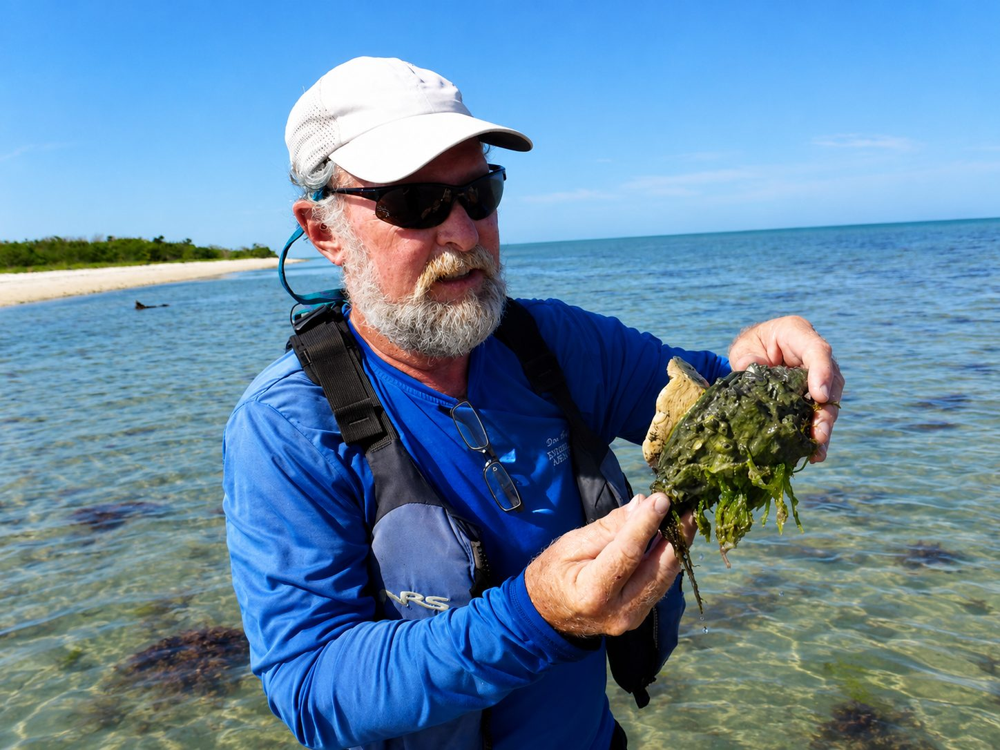
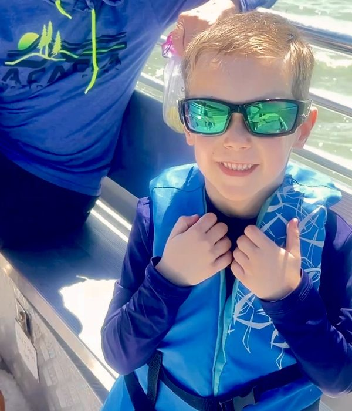
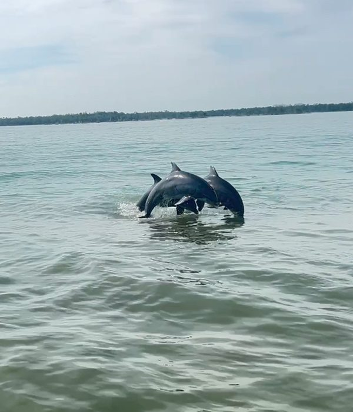

Marco Island Boat Tours is a division of Everglades Area Tours — a team of formally trained Florida Master Naturalists, Environmental Educators, and full-time outdoor leaders who have dedicated their lives to this extraordinary ecosystem.
Every guide at Marco Island Boat Tours is a certified Florida Master Naturalist — not just a boat captain with a license. These are educators, researchers, and passionate conservationists who have spent decades learning this ecosystem inside and out.

A certified Florida Master Naturalist and US Coast Guard licensed captain with over 20 years guiding in the 10,000 Islands. Specializes in bird identification and dolphin behavior.

Florida Master Naturalist and environmental educator. Ed is a favorite among photographers and birders for his extraordinary knowledge of nesting sites and wildlife patterns.

Certified naturalist and passionate shelling expert. Charles knows every productive tidal flat and barrier island in the 10,000 Islands and has a gift for engaging young guests.
All guides hold the Florida Master Naturalist certification — the highest standard for naturalist training in the state of Florida.
Certified by the Florida Society for Ethical Ecotourism — one of only a small number of operators statewide to hold this distinction.
All captains hold current US Coast Guard operator licenses. Your safety is our first priority on every single tour.
Featured on PBS, National Geographic, Lonely Planet, Southern Living, and USA Today Travel as a top eco-tour destination in Florida.